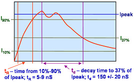
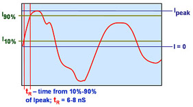
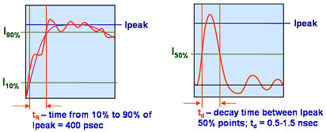

ESD Sensitivity
(ESDS) Testing
Waveforms
The various
models used for testing a device's ESD sensitivity (ESDS) level, i.e.,
HBM, CDM, and MM, apply standard waveforms to electrically stress the
device under ESD testing. These waveforms are usually defined by
their peak current level, rise and fall times, and duration. Figures 1 to
3 below show the various waveforms used in HBM, CDM, and MM testing,
respectively.
During
HBM ESD testing,
the
HBM test circuit must apply a pulse that meets the requirements shown in
Figure 1. The rise time of the HBM ESD pulse,
tR,
which is measured between the time the pulse reaches 10% of its peak
current to the time the pulse reaches 90% of its peak current, must be
between 5 to 9 nanoseconds long on the average. On the other hand, the time delay
tD,
which is the time it takes for the pulse to decay from 100% to 37% of
its peak current, must be 150 +/- 20 nanoseconds long. The HBM pulse
peak current at 400 V must be 0.27 +/- 10% A.
|
 |
|
Figure 1.
Stress Waveform Used for HBM ESD Testing
|
During
MM ESD testing,
the
MM test circuit must apply a damped sinusoidal signal (~12 MHz) that
meets the requirements shown in Figure 2. The rise time of the MM ESD
pulse,
tR,
must be between 6 to 8 nanoseconds long on the average. The MM
peak current at 400 V must be 5.8 +/- 20% A.
|
 |
|
Figure 2.
Stress Waveform Used for MM ESD Testing
|
During
CDM ESD testing,
the
CDM test circuit must apply a pulse that meets the requirements shown in
Figure 3. The rise time of the CDM ESD pulse,
tR,
must be between 300 to 500 picoseconds long. On the other hand,
the time delay
tD,
which is the time between the rising 50% peak current point and the
decaying 50% peak current point of the pulse, must be 0.5-1.5
nanoseconds long on the average. The CDM peak
current at 400 V must be 2.1 +/- 20% A.

Figure 3.
Stress Waveform Used for CDM ESD Testing
See also:
What is ESD?;
ESD Models;
ESDS Levels;
ESD Failures; ESD Standards;
ESD
Controls;
ESD Audit Checklist; The Triboelectric
Series
HOME
Copyright
© 2001-2005
www.EESemi.com.
All Rights Reserved.